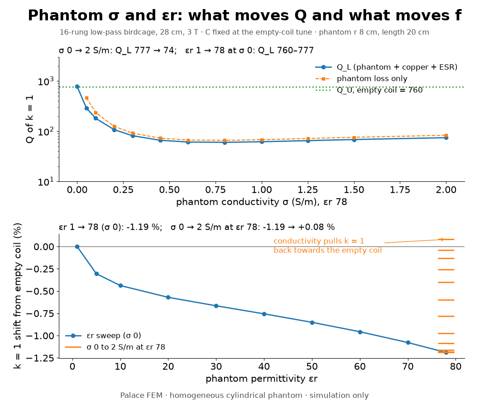
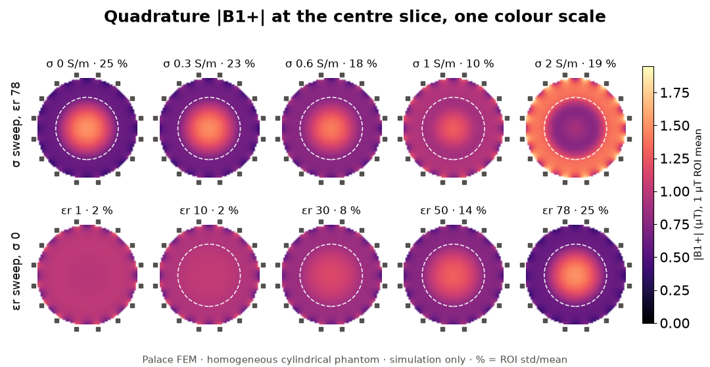

MRI RF coil · birdcage-palace
Birdcage builder
Set the coil specs. Your browser computes the ladder-network model: every mode frequency and the capacitor that puts the k = 1 mode on the Larmor frequency. The last step writes a package that builds the coil in Gmsh, solves it in the Palace FEM solver and tunes the capacitors on your own machine.
All modes (table)
How good is the ladder model?
The ladder network is quasi-static. It leaves out the stray capacitance of the strips and the shield end caps, so its capacitor is a first guess. These are our Palace eigenmode results for the reference coil: 16 rungs, 28 cm diameter, 25 cm long, 34 cm closed shield, 3 T (127.7 MHz), no load. Simulation only.
Measured in Palace (16-rung, 3 T reference)
Field uniformity per mode: std/mean of the transverse |B| over r < 0.6 R, |z| < L/6 (CV, %), mean over each degenerate pair. The last column is this page's quasi-static estimate for the same coil.
Package test, 21 Oct 2026: a 12-rung high-pass coil, 24 cm diameter, 3 T, coarse mesh, order 1 (84 k unknowns), built from this page's package in a fresh venv. Ladder 24.29 pF per ring gap → Palace k = 1 at 134.18 MHz (+5.1 %). One tune step: 26.80 pF → 128.15 MHz (+0.33 %, inside the 0.5 % tolerance). Two Palace solves of 40 s each on 4 ranks; quadrature B1+ ROI std/mean 2.3 %.
Package test "Both", 21 Oct 2026: the reference 16-rung low-pass coil, coarse mesh, order 1, from this page's zip in a fresh venv (15.5 min in all). With the shield: 2.807 pF → 112.98 MHz, tuned 1.8635 pF → 127.714 MHz. Without: 1.804 pF → 107.49 MHz, tuned 0.9369 pF → 127.706 MHz, radiation Q 83. Removing the shield at the same C moves k = 1 by −16.7 %. The unshielded air box has to reach about λ0/4 past the coil: a box 15 cm out gave a radiation Q of 18 (air-box check).
This is why the package does not stop at the ladder value. It solves the coil in Palace at the first guess, then birdcage tune takes secant steps on 1/f² (linear in C) on the same mesh until k = 1 is within the tolerance of f0. Numbers from results/lp16_3T.json, hp16_3T.json, bp16_3T.json.
1H, f0 = 42.577 MHz/T × B0
Capacitor override (optional)
Blank uses the ladder first guess (the CLI default). A value here goes to --c-leg / --c-ring.
Cost of one Palace solve
Measured runs behind the estimate
Tetrahedra come from a fit to 20 Gmsh builds of this geometry code (10 designs × 2 mesh presets, within 7 %). Unknowns per tetrahedron, memory and time are scaled from the Palace runs above (MUMPS direct solve, MGMaxLevels 1, 4 MPI ranks on an 8-thread, 32 GB machine). Time grows as unknowns1.24, memory as unknowns1.05. The upper end allows for a machine shared with another job.
Open in Palace and begin tuning
A web page cannot run Palace. This button writes a package for this design: spec.json, run.sh (Linux or WSL), run.ps1 (Windows, runs run.sh in WSL) and a README with the requirements. The script installs birdcage-palace from GitHub, builds the coil, solves it at the ladder first guess, labels the modes, then tunes C until k = 1 is on f0. With a phantom, it then fills the phantom with your εr and σ on the same mesh and reports the loaded Q.
For a coding agent such as Claude Code with palace-agent-tools (Palace config linter, cost estimate, run guard, result checks).
Loading: what the phantom's σ and εr do
Our Palace results for the reference coil (16-rung low-pass, 28 cm, 34 cm shield, 3 T) with a centred cylindrical phantom (radius 8 cm, length 20 cm), C fixed at the empty-coil tune. Eighth model with both k = 1 polarisations, production mesh density; coil losses: copper strips and shield plus 0.68 Ω ESR per capacitor. Simulation only.


Q follows the conductivity. Q_U/Q_L goes from 1 (empty) to 12.7 at σ = 0.8 S/m and drops back to 10.2 at 2 S/m, where the skin depth (about 3.6 cm) keeps the field out of the phantom's centre. A lossless phantom of εr 78 changes Q by only +2 %. The permittivity moves the frequency and the field shape: εr 1 → 78 lowers k = 1 by 1.19 % and raises the B1+ std/mean from 2.3 to 24.6 % (the centre brightens). Conductivity is not neutral there either: at εr 78 it pulls k = 1 back up (−1.19 % at σ 0, +0.08 % at 2 S/m) and damps the centre brightening (B1+ std/mean 6.8 % at 1.25 S/m, 18.0 % at saline 0.6 S/m). Numbers: results/loading_sweep.json; method and cost: docs/loading-study.md.
Links
- birdcage-palace on GitHub: the Python package that run.sh installs (ladder model, Gmsh geometry, Palace config, mode labels, tune loop).
- Project write-up: the tuned 16-rung coil, mesh convergence, symmetry planes and port tuning.
- palace-agent-tools: tools an agent calls to set up, lint, run and check Palace jobs.
- agent.rf: the RF lab hub this page belongs to.
- Palace install guide (Spack, Apptainer/Singularity).
References
- C. E. Hayes, W. A. Edelstein, J. F. Schenck, O. M. Mueller, M. Eash, "An efficient, highly homogeneous radiofrequency coil for whole-body NMR imaging at 1.5 T," J. Magn. Reson. 63(3), 622–628 (1985). doi:10.1016/0022-2364(85)90257-4
- C.-L. Chin, C. M. Collins, S. Li, B. J. Dardzinski, M. B. Smith, "BirdcageBuilder: design of specified-geometry birdcage coils with desired current pattern and resonant frequency," Concepts Magn. Reson. 15(2), 156–163 (2002). doi:10.1002/cmr.10030. The ladder model here is the same family of model; this page is not that tool.
- M. C. Leifer, "Resonant modes of the birdcage coil," J. Magn. Reson. 124, 51–60 (1997): the Fourier-mode form of the mutual inductances.
- F. W. Grover, Inductance Calculations (1946): strip self-inductance by geometric mean distance.